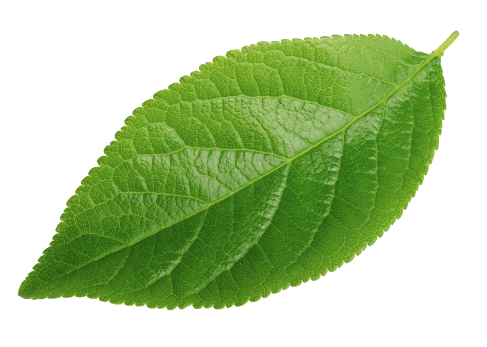
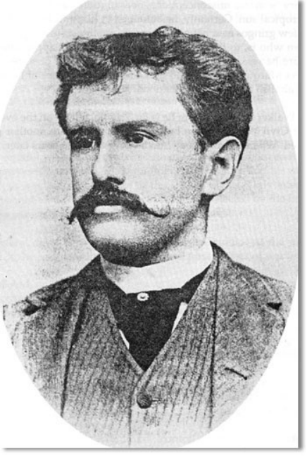

Chiếc là cuối cùng (The Last Leaf) là một trong những truyện ngắn hay của nhà văn nổi tiếng người Mỹ O. Henry
 Sue (phiên âm. Xiu) và Johnsy (phiên âm: Giôn-xi) là 2 nữ hoa sĩ trẻ sống trong 1 khu nhà trọ. Cu Behrman (phiên âm Bơ-men) là một họa sĩ già cũng sống ở đó, cả đời cụ khảo khát vẽ được một kiệt tác nhưng chưa thực hiện được. Mùa đông năm ấy. Johnsy bị bệnh sumg phôi rất nặng Bệnh tật và nghèo túng khiến cô tuyệt vọng không muốn sống nữa và nghĩ rằng khi chiếc lá thường | xuân cuối cùng rụng xuống sẽ là lúc mình lia đời. Sue vô cùng lo lắng và hết lòng chạy chữa cho bạn nhưng vô ích. Biết được ý nghĩ điên rồ đó của Johnsy, cụ Behrman âm thẩm thức suốt đêm mưa gió để vẽ | chiếc lá thường xuân. Chiếc lá cuối cùng đã không rụng trong đêm bão lớn khiến Johnsy nghĩ lại. cô hy vọng và muốn được sống. Tuy nhiên, cụ Behrman lại chết vì bệnh sung phổi sau một đêm đội mưa đội gió | để vẽ hình chiếc lá cuối cùng lên tường nhằm cứu Johusy. Sau khi Sue được thông báo rằng Johnsy đã thoát khỏi nguy hiểm cô lặng lẽ đến bên bạn bảo cho bạn về cái chết của cụ Belrman và bí mật của chiếc lá cuối cùng